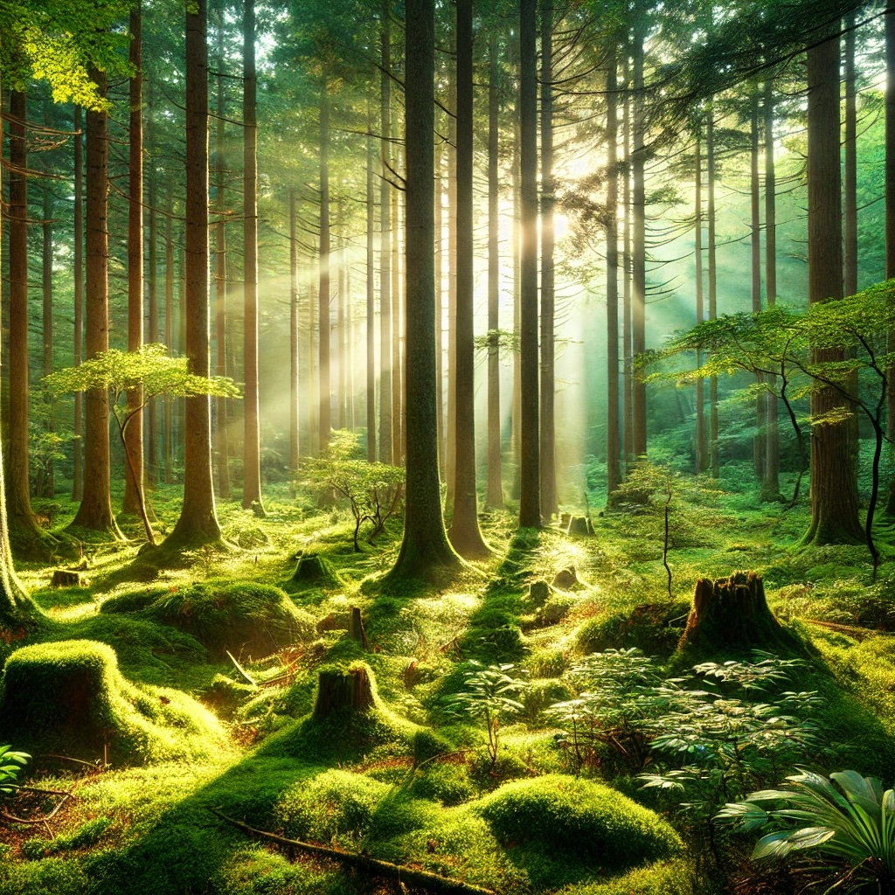

Introduction
Nature offers an endless canvas of beauty, diversity, and inspiration. In this interactive document, we will explore the importance of preserving natural habitats and celebrating their uniqueness.
Key Points
1. Biodiversity
Global Biodiversity Numbers:
- Mammals: 6,495 species
- Birds: 11,158 species
- Reptiles: 10,793 species
- Amphibians: 8,230 species
- Fish: 34,711 species
Data updates every few seconds to simulate live tracking
2. Human Connection
Nature provides psychological and physical benefits. Activities like hiking and birdwatching foster a sense of harmony with the environment.

Click the image to zoom - A lush forest scene showcasing natural biodiversity
Case Study: Amazon Rainforest
The Amazon Rainforest, often called the "lungs of the Earth," produces 20% of the world's oxygen and is home to countless unique species.